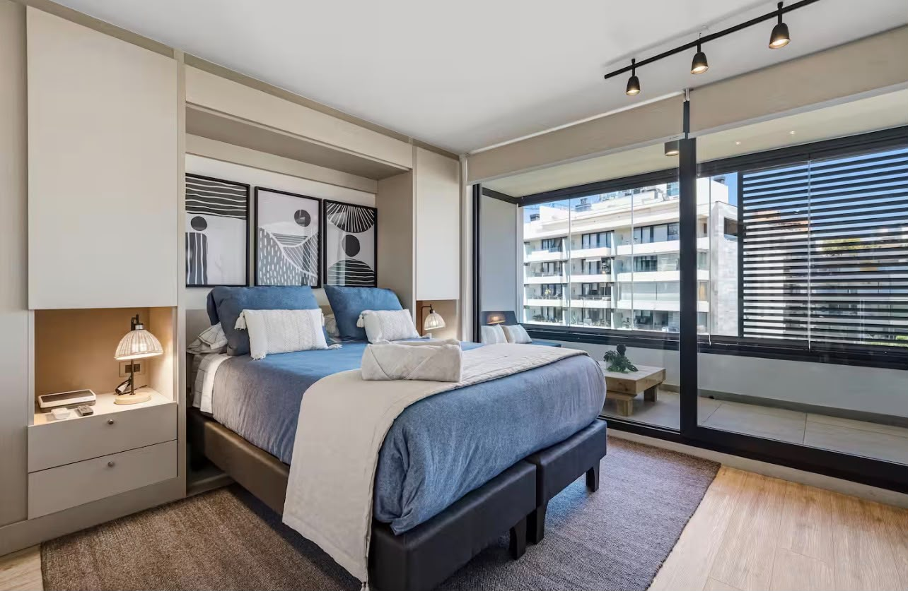
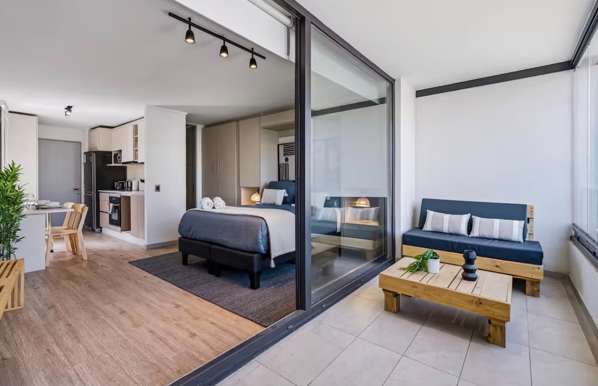
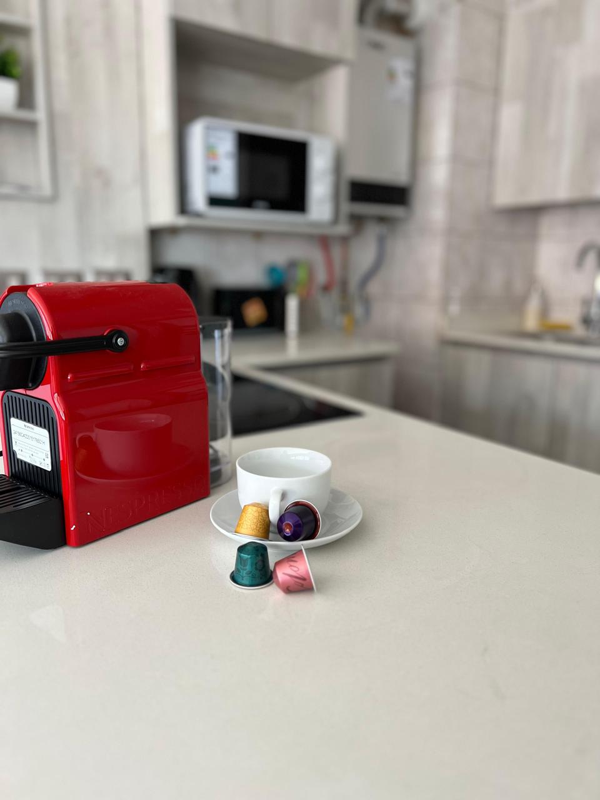

SERVICIO · INSIGNIA
Limpieza Airbnb en todo Santiago
Coordinamos el cambio entre huéspedes según tu calendario de reservas: limpieza, control de amenities y entre 8 y 10 fotos de cada entrega, antes de que llegue el siguiente huésped. Los 7 días de la semana, reserva tras reserva.
La limpieza Airbnb, o turnover, es el cambio completo que deja una propiedad lista entre un huésped y el siguiente: se lava la ropa de cama y las toallas, se limpia el departamento entero, se revisa que no falte ni esté dañado nada, y queda registro con fotos antes del próximo check-in.
Profresh lo hace en todo Santiago los siete días de la semana, coordinado con el calendario de reservas de cada propiedad. El anfitrión recibe entre 8 y 10 fotos de cada entrega y un aviso cuando algo se está acabando o quedó dañado, sin tener que ir a mirar.
Datos de la operación de Profresh a septiembre de 2026.
QUÉ INCLUYE
Cada turnover, con el mismo estándar.
Check-out / check-in coordinado
Ajustamos la limpieza a la hora exacta de salida y llegada de tus huéspedes, según el calendario de tu plataforma.
Lavado de ropa de cama y control de amenities
Lavamos las toallas y sábanas de tu propiedad y las dejamos listas para el próximo huésped. La ropa de cama y los amenities los aporta cada anfitrión — nosotros nos encargamos de que nunca falten, avisándote a tiempo si algo se está por acabar.
Entre 8 y 10 fotos de cada entrega
Camas, baño, cocina, living, pisos y la vista general del departamento ya listo. Siempre las mismas zonas, para que puedas comparar entre una limpieza y otra sin estar presente.
Aviso de daños o faltantes
Si algo quedó roto o falta algo del inventario, te avisamos apenas lo detectamos.
Un listado de entrega definido para tu propiedad
Lo dejamos escrito en la reunión inicial y se revisa completo en cada turnover: puerta con llave, lavadora vacía, horno y luces apagados, basura afuera, código de acceso del próximo huésped probado, amenities suficientes, nada olvidado del huésped anterior y todo en buen estado.
Más de 50 departamentos coordinados
Hoy coordinamos los calendarios de más de 50 departamentos Airbnb, con más de 140 turnovers al mes. Si administras varias propiedades, entran todas al mismo sistema y al mismo equipo.
ALCANCE
Qué hacemos y qué no.
Dejarlo claro antes de empezar evita la conversación incómoda después.
Sí hacemos
La limpieza completa entre reservas. El lavado de la ropa de cama y las toallas de tu propiedad. El control de los amenities, avisándote antes de que falten. El reporte con fotos de cada entrega. El aviso de daños y de objetos que dejó el huésped. La coordinación con tu calendario de reservas. Y varias propiedades a la vez, con el mismo equipo.
No hacemos
No proveemos los amenities ni la ropa de cama: los aporta cada anfitrión. No administramos la propiedad ni respondemos los mensajes de los huéspedes. No hacemos el check-in ni entregamos llaves a huéspedes. No hacemos reparaciones ni mantención: cuando algo está dañado te avisamos para que decidas. Y no publicamos ni gestionamos tu anuncio.
CÓMO TRABAJAMOS
Cuatro pasos y listo.
Cotizas
Nos escribes por WhatsApp con lo que necesitas.
Agendamos
Coordinamos día, hora y equipo.
Limpiamos
Llega el equipo y deja todo impecable.
Quedas tranquilo
Revisas el resultado. Si algo falta, lo resolvemos.
NUESTRO TRABAJO
Propiedades listas para recibir.



DÓNDE TRABAJAMOS
Todo Santiago, comuna por comuna.
De los más de 50 departamentos Airbnb que coordinamos hoy, más de 20 están en Las Condes —entre Escuela Militar, Los Dominicos y el eje Apoquindo— y más de 10 en Ñuñoa, en torno a Plaza Egaña y Plaza Ñuñoa. También atendemos Providencia, Vitacura, La Reina, Lo Barnechea y el resto de Santiago.
Las Condes: cuatro horas de ventana
Es la comuna donde más trabajamos. Casi todas las propiedades que atendemos ahí tienen check-out a las 11:00 y check-in a las 15:00, y una limpieza entre huéspedes toma alrededor de una hora. Es habitual además que un mismo anfitrión tenga varios departamentos en un mismo edificio: entran todos al mismo calendario y al mismo equipo.
La ruta del día se ordena por comuna
Las limpiezas de cada día se agrupan por sector para que el equipo no cruce Santiago entre una y otra. Eso es lo que permite cumplir la ventana entre el check-out y el check-in sin apuros, y lo que hace que una propiedad nueva en una comuna donde ya trabajamos entre sin fricción.
PREGUNTAS FRECUENTES
Antes de escribirnos.
¿Trabajan los domingos?
Sí. Para Airbnb trabajamos los siete días de la semana, porque los check-out caen cualquier día. Lunes y domingo son, por lejos, nuestros dos días con más turnovers.
¿Cuánto demora una limpieza entre huéspedes?
Alrededor de una hora en promedio. Puede tomar más o menos según el estado en que quedó el departamento y la cantidad de piezas. Siempre dentro de la ventana entre el check-out y el check-in.
¿Cómo empiezo?
Escríbenos por WhatsApp y coordinamos una reunión para iniciar: te explicamos el servicio y dejamos definido el estándar de tu propiedad. Desde ese momento coordinamos las limpiezas con tu calendario de reservas.
¿Qué pasa si el huésped se retrasa en el check-out?
Avísanos apenas lo sepas, por WhatsApp. Con ese aviso reordenamos las limpiezas del día y ninguna otra propiedad se atrasa. Sin el aviso, el equipo llega a la hora acordada y puede encontrarse con el huésped todavía adentro.
¿Ustedes ponen los amenities y la ropa de cama, o eso lo aporta el anfitrión?
Los amenities (shampoo, jabón, papel higiénico, etc.) y la ropa de cama los aporta cada anfitrión — nosotros no los proveemos. Lo que hacemos es lavar las sábanas y toallas en cada turnover, y controlar que los amenities nunca falten: si vemos que algo se está acabando, te avisamos a tiempo para que lo repongas.
¿Cuánto cuesta la limpieza de un Airbnb?
Depende de tres cosas: el tamaño del departamento, cuántas camas y baños tiene, y cuántas propiedades coordinas con nosotros. Un estudio no cuesta lo mismo que un tres dormitorios, y un anfitrión con varias propiedades tiene una tarifa distinta a la de una propiedad suelta. Escríbenos por WhatsApp con la dirección y el tipo de departamento y te cotizamos el mismo día, sin costo.
¿Cómo entran al departamento si yo no estoy?
Con el código de la cerradura o el método de acceso que dejamos definido en la reunión inicial. Esa clave queda guardada en nuestro sistema interno y la ve solo la persona que tiene asignada esa limpieza ese día: no circula por WhatsApp ni queda en ningún grupo. Si dejas de trabajar con nosotros, el acceso se revoca el mismo día.
¿Qué pasa si el huésped dejó el departamento en mal estado?
Lo limpiamos igual y te avisamos con fotos apenas lo vemos, sin esperar a terminar. Si el estado exige bastante más que una limpieza entre reservas, te lo decimos antes de seguir para que decidas con la información a la vista y no después.
¿Qué comunas cubren?
Todo Santiago. Donde más trabajamos es Las Condes y Ñuñoa, que concentran la mayor parte de los departamentos que coordinamos, y atendemos también Providencia —que queda justo entre las dos—, Vitacura, La Reina y Lo Barnechea. Si tu propiedad está en otra comuna de Santiago, escríbenos igual y lo vemos.
¿Pueden coordinar varias propiedades a la vez?
Sí, es habitual para anfitriones con más de un Airbnb en Santiago — coordinamos los calendarios de cada propiedad con el mismo equipo asignado.
OTROS SERVICIOS
También podría interesarte.
¿Coordinamos la limpieza de tu Airbnb?
Cuéntanos tu calendario de reservas y armamos un protocolo fijo para cada turnover.
Cotizar por WhatsApp →